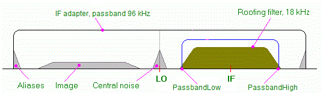

Signal Format
Every plugin used in the DSP Pipeline to process
I/Q and audio data has a Format property of type
SignalFormat that describes
the actual format of the data at the output of the plugin. The next plugin in the
processing chain reads the Format of the previous stage and configures
its own processing for the given input format.
Constructors
The SignalFormat class has three constructors:
public SignalFormat(int samplingRate, bool isComplex, bool isSync, int channels, int passbandLow,
int passbandHigh, int dialOffset, Sideband sideband = Sideband.Upper, float stageGain = 0)
{
SamplingRate = samplingRate;
IsComplex = isComplex;
IsSync = isSync;
Channels = channels;
PassbandLow = passbandLow;
PassbandHigh = passbandHigh;
DialOffset = dialOffset;
Sideband = sideband;
StageGain = stageGain;
}
public SignalFormat() : this(AUDIO_SAMPLING_RATE, false, true, 1, 0, AUDIO_SAMPLING_RATE / 2, 0) { }
public SignalFormat(SignalFormat prototype) { this.prototype = prototype; }
}
The first two constructors are used by the
signal source plugins that appear at the start of the
Dsp Pipeline chain.
The third one is used by the signal processing
plugins that receive data from the previous stage in the chain, process it, and pass
it to the next stage. This constructor receives the prototype format as an
argument, and all of its properties that are not explicitly assigned in the code
take the values from the prototype format. The link to the prototype format is
dynamic, that is, when a property in the prototype changes, this is immediately
reflected in the corresponding property of the current format. Please see the
source code
 of the
of the SignalFormat class for the implementation details.
Properties
The data in the DSP Pipeline is passed between the stages
in the form of an array of the floating point values. The following properties
of the Format object help to interpret these values correctly.
SamplingRateis the sampling rate of the of the plugin output data, in samples per second.IsComplexis a boolean property that indicates if the data are real-valued or complex-valued. In the latter case, the array of floats contains pairs of values, the real part (I) is followed by the imaginary part (Q).Channelsis the number of signal channels in the data. Examples of multi-channel data are stereo audio (two real-valued channels) and I/Q output of a four-band Afedri receiver (four complex-valued channels). In the N-channel data, the floating point array contains a sequence of samples, where each sample consists of N real or complex values.IsSyncis a boolean property that indicates if the channels in the multi-channel data are phase synchronized (e.g., for diversity reception) or independent (e.g., for multi-band reception).PassbandLowandPassbandHighare the lower and upper limits of the useful part of the sampled frequency range, in Hertz. In most cases, only a part of this range contains clean, artifact-free signals.As an example, audio output from a transceiver may be sampled at a rate of 24 kHz, but since the audio being sampled has passed through an SSB filter, the signals are present only in the range of 300-2700 Hz.
An extreme case is an IF adapter on the IF output of a conventional transceiver. In this setup, the signal received by the adapter has passed through a roofing filter in the main radio with a typical passband of 15 to 18 kHz, and the LO in the adapter is set a few kHz below the actual IF frequency, to keep the image signals and aliases away from the received signals. Only a small part of the sampled range of frequencies, -48...48 kHz, contains received signals. A plugin that interfaces with an IF adapter should set the
PassbandLowandPassbandHighproperties to cut off the unused parts of the spectrum:
DialOffsetis the offset of the point in the sampled spectrum that corresponds to the dial frequency of the radio. The dial frequency is the frequency reported via the ITuner interface, it is usually displayed on the front panel of the radio. On the chart above, the dial offset is positive, it is equal to the distance between the IF and LO points.Sideband. In most cases, there is a direct relation between the frequency of the signal in the sampled data and the original RF frequency of the same signal. TheSidebandproperty is set toSideband.Upperif higher RF frequencies map to higher frequencies in the data, andSideband.Lowerotherwise. In some cases, however, e.g., in the demodulated FM signals, there is no relation between the RF frequencies and audio frequencies. For such signals, theSidebandshould be set toSideband.None.